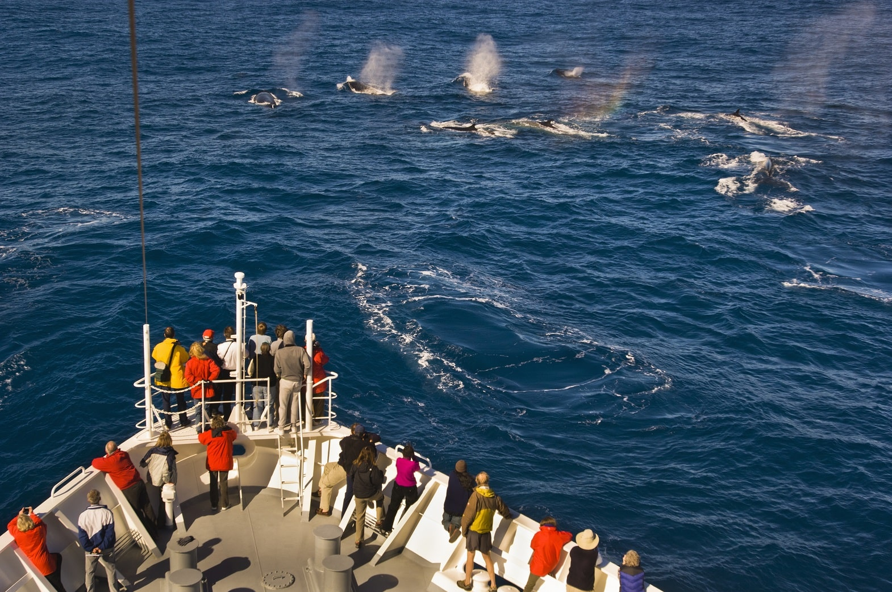
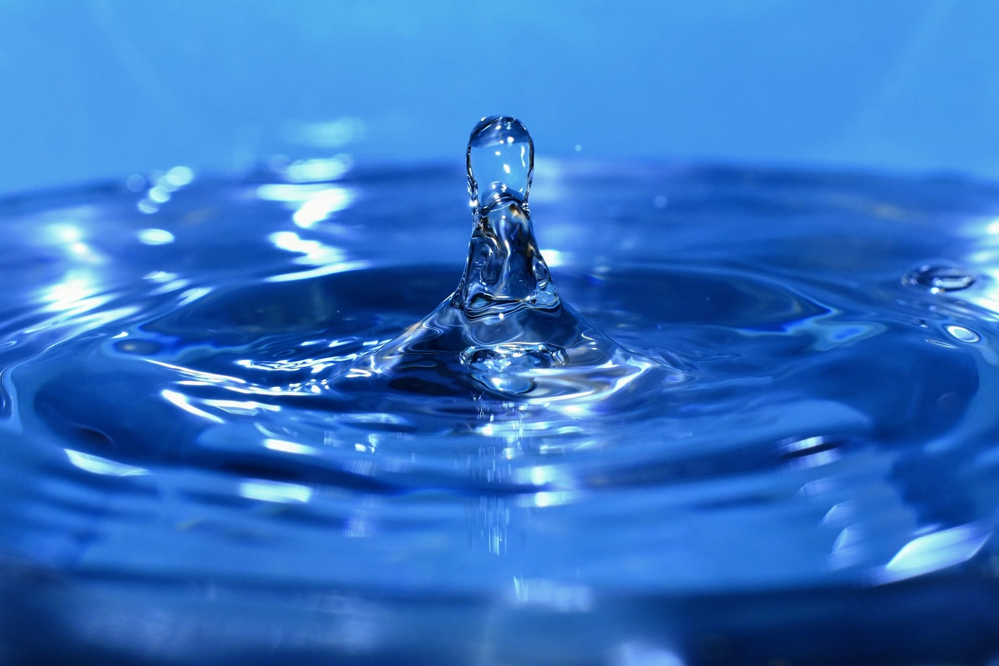

Understanding Crypto - Whales
Most of our readers, if not all, hold some crypto assets. And it is important that we do, as the retail holding crypto is a clear sign of a wider acceptance and interest. Still, it is important to understand that those who buy assets because they believe in the projects and those who buy them to make money are very often completely different people. And it is not the envisioners who control the market, but someone else. The Whales.
What is a Whale?
 Among many retail investors, there is a single investor that has enormous power over the market. Be it a single person or a company, they hold more assets than a huge part of the other investors combined. There is no concrete definition of a Whale. Each market is different and smaller markets need a smaller deposit to get that honor. The thing that actually identifies a while is his movement - when a Whale makes a move, the whole market shakes.
Among many retail investors, there is a single investor that has enormous power over the market. Be it a single person or a company, they hold more assets than a huge part of the other investors combined. There is no concrete definition of a Whale. Each market is different and smaller markets need a smaller deposit to get that honor. The thing that actually identifies a while is his movement - when a Whale makes a move, the whole market shakes.
There is a list available on the internet that shows the biggest Bitcoin wallets. As you can see in it, there are about 100 people and institutions that hold more than 10 000 coins. Many of them are wallets of huge exchanges that are not participating in the market themselves (or, at least, they shouldn’t). The others? No one knows. As long as the person or company hasn’t disclosed what their Bitcoin wallet’s address is, there is no way of knowing. And they hold over a billion USD in Bitcoin.
If you want to know about Ethereum, not Bitcoin, go straight to etherscan, choose an ERC20 token in the right upper corner and then sort by “holders”. You will see some coins have many folks who hold a lot of tokens. Again a lot of them will be various exchanges, but there are many unknown players who hold a lot of power over the whole blockchain.
Whale movements
When one of these big players makes a move, it makes waves in the whole ocean. This year the price of Ethereum dropped in a single exchange by more than 50%, from 1600 dollars to 700 dollars. A huge drop, basically insanity. It starts a huge panic, because every trader knows the same faulty rule: “I’m the only one who is a fool and just guessing. Everyone else probably is smarter than me.” So when they see such a price swing, they immediately think that they have missed something. Some news about a tragedy or the CEO of the company has been arrested for fraud.
The trader is not sure what is going on, but it is clear that they are the only ones who are out of the loop. So it makes them sell their assets too. Why should they be the only fools to lose when it all comes crumbling down? Many traders aren’t even at their computers when that happens, they have just set up stop loss orders that state: “Sell everything if the price drops under 1000 dollars.” Every fear creates another new fear in a never ending circle.
While the cause of the price drop was a combination of everyone panicking and the sell orders activating, the real trigger could be something completely unrelated to the value of Ethereum. A single rich person may have decided that they want a Spanish resort house and so they sold their Ethereum assets. Or, a more grim example, a Whale has died, left all their money to their kids who don’t know anything about the cryptomarket and just sell everything to have “real” money. The point is, while the price of the coin drops significantly, nothing has happened to change the perceived value of it. It is still the same project, still the same people and the same product. Just a single person sold everything they had, oversaturating the market, creating a huge supply with limited demand and then disappeared.
Whale watching

Everyone else understands this. Many smart traders have adopted different tactics in their daily life. Some are reading crypto news to see if they should buy or sell assets in distinct projects. Some are working with technical analysis and following economical data. Others don’t really care about the names of projects and data, but are just scalping “buy red, sell green” over and over again. And between them a new trader has appeared - the Whale watcher.
Imagine if you knew the smartest trader. And then had the option to follow all their trades. See their every move. Sure, not predict it, but see it the second they make it. Wouldn’t that be grand? That is exactly what Whale watchers are doing. The difference is that they can only see the blockchain wallet, but in no way can know who it belongs to. But remember the faulty quote: “Probably everyone else is smarter, I am just guessing.” So when a Whale watcher notices some huge Whales making moves to sell everything they have and move to a different market, you can be sure as hell the trader will follow the Whales. And while everyone will be writing articles named: “What happened to the price of this coin?” the trader will already be swimming in the new market with his giant friends who don’t even know he exists.
Why are Whales important?

They cause instability and uncertainty. While not a bad thing as such, Whales can really influence the projects in different ways. One is that they can cause panic when they sell off as we already described. Second thing is that they lower the volume in the market. A huge entity that has just bought a huge lump of currency and decides to just hold it is like an immovable rock in the middle of the market. It has “no use” to traders.
Another important thing is that there are some projects where decisions are made by voting. The power is given to the project’s members, meaning that they will always vote in such a way that will ensure the project's stability and longevity. At least in theory. If a Whale has suddenly decided to exit a project like this, they can cause even bigger damage than just the price drop. A Whale can vote for a decision that will make short-term gains and long-term losses for the project, pump up the price that way and then exit, leaving everyone else with a ruined project.
Still, the most important part of Whales is the dreaded “Rug pull”. It means that you set up everything on the rug and then just yank it away, letting everything drop. Lately in the markets there are many coins that promise huge, amazing returns. You just hold these 20 coins you bought for 2 dollars each and in a few months you’ll be a millionaire, no worries. Just one strange thing about the project - 50% of its coins are all in a single Whale’s wallet.
Sure, it could be an exchange or a contract wallet of a stablecoin. It can be many things. As well as the account of the project’s owner, the CEO. Whale watchers will be the first ones to notice that a big wallet in a strange project has started selling everything off, trying to gain profit for themselves while still running an ad campaign, inviting everyone to buy. And when the price is the highest, the rug gets pulled. Whales. A strange creature of the cryptoverse.
Conclusion
Of course, Whale spotting is not that easy. There are many aspects in this and many Whales decide to divide their finances among many other wallets, thus ensuring that they do not stand out. It takes a smart man to follow all those leads and figure out who owns them. Still, one thing is clear - sometimes a huge price drop is just a splash in an evermoving ocean.
Thank you for reading our blog. If you have any questions about the topic or want to suggest a new one, please write an email to [email protected].